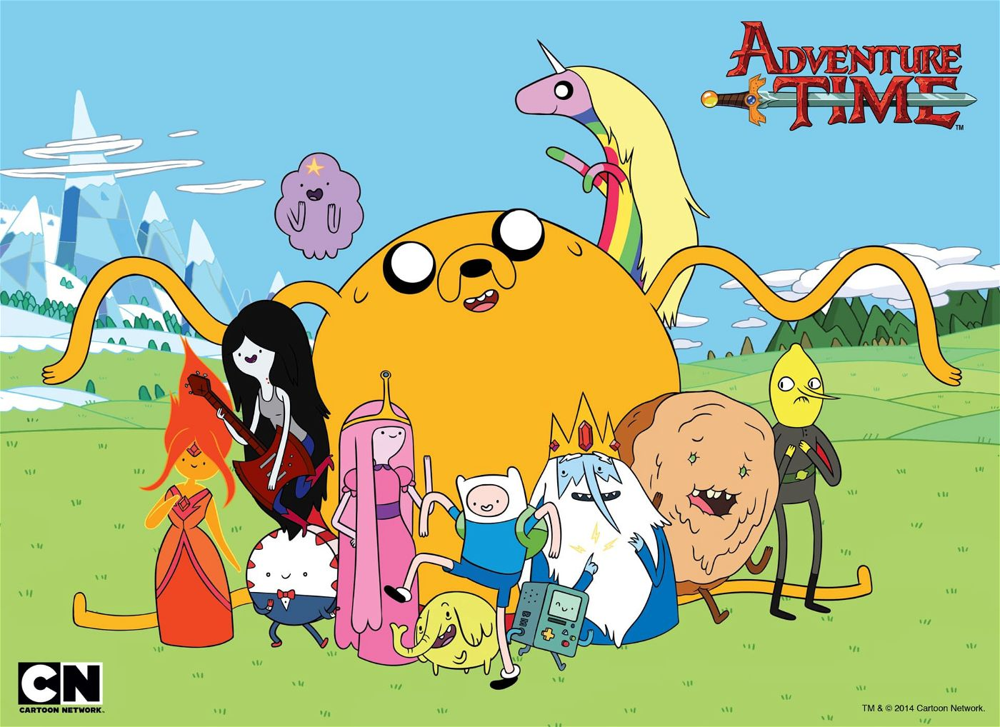

About LSP
Lumpy Space Princess (possibly known as Lumpy Space Queen and often referred to by her initials, LSP) is the queen of Lumpy Space. She is one of the three most recurring princesses, the other two being Flame Princess and Princess Bubblegum. Finn and Jake have traveled to Lumpy Space as well as to her parents' residence after she accidentally bit Jake in "Trouble in Lumpy Space". According to the events in "Princess Day," she is not recognized by the chair of princesses, partially because of her dramatic attitude and the fact that she is no longer the heir to Lumpy Space.
Adventure Times - Lumpy Space Princess and friends
LSP's Characteristics
- Lumpy Space Princess acts like a bratty, apathetic, attention-seeking and willfully ignorant teenager. Lumpy Space Princess can be ostensibly unmoved and uncaring about what goes on around her, using such words as "sure," "whatever," and "fine" frequently. She can also be physically apathetic and unwilling to make an effort, as shown in "Gotcha!" when she reluctantly helped Finn and Jake carry rocks, but complained the entire time (even though it was only two small rocks).
- She prefers to be the center of attention. When people ignore her, she will yell things out to regain the spotlight, such as in "The Creeps" when she interrupted Finn by talking about her relationship with Brad. She also became upset (and violent) when another group performed the song she chose during the talent show in "Five Short Graybles," and again when Finn and Jake took the win out from under her.
- She often misinterprets things and jumps to conclusions, as shown in "It Came from the Nightosphere" when she saw Hot Dog Princess's soul being sucked into Marceline's dad's mouth, and became upset for not being invited to the "party." She will also create drama where none exists, such as in "The Monster" and "Gotcha!" where she assigns names and personalities to animals and insects in order to act out romance-driven storylines.
- She tends to lose her temper and make fun of people, but she can sometimes attempt to be nice towards others. For example, when Jake contracts the lumps she agrees to help and takes Finn and Jake to Lumpy Space for the cure in "Trouble in Lumpy Space" and was forgiving towards Finn after he yelled at her in the same episode. She was also at the hospital, apparently concerned for Princess Bubblegum, in "Mortal Recoil."
Part of the Show
LSP's Friends
Characters
- Finn
- Jake
- BMO
- Flame Princess
- Bubblegum Princess
- Ice king
- Gunther
- Lady Rainycorn
- Tree Trunks